フォニックス動画 作成プロンプト（A〜D・2026-10-16 版）
目的: この指示で同じ動画を作り直せること。北浦先生の指示は原文のまま、使った画像も残しています（蜂谷さん依頼 10/16）。
1. 決まり（先生 OK 済み）
- 絵: A の基準の少年・黄色の無地・正面固定・ピクサー風。声G: 先生の録音 → ElevenLabs Liam seed7 → +4半音 → 最大 -1dB。
- 文字: Century Gothic Bold（名前＋小文字3つ、音で赤）。カードは merged PDF の該当ページ。
- 流れ: 名前2.0秒 → 音×3（3.0/5.5/8.0秒）→ 0.5秒。10秒・240コマ・1920×1080・AAC。
- キャラ: 拳に半透明0.6、手の動きで約0.7秒かけて0。口にかけない。修正版は毎回新スレッドで告知。
2. 手順
- 先生の静止画（始め・音の時）の左右を「子ども」と「画面」の両方で書く。
- 始めと終わりの絵を nano-banana で作る（画面の向きで指示、終わりは動く手だけ変える）。
- H3 で動き（手を開かない・まばたきなし・頭と服を動かさない）。指示文の全文は各文字の末尾。
- 顔は1コマに固定、手は H3 の手の範囲だけ、口は口元の楕円だけ貼る。元のコマを1枚ずつ使う。
- 口と手の1コマごとの変化を数値で、残像・二重線を原寸で確かめる。
3. くり返さない注意
- 残像: コマを混ぜる・補間する・口を貼ったり外したりすると出る（A v7・B v11・D v9）。
- 二重: 頭が下がる分の位置合わせ不足、貼る範囲が鼻や顎線をまたぐ（B v9・v14、D v2）。
- 手: H3 は手が開く・親指が伸びる・服が伸びる → 元の絵や親指消し、体のずれ戻し（B v13・D v9）。
A — Annie Apple /æ/
いまの版: 現行候補: v2cg2 の映像＋声G（採用の明言はまだ）
作り方: ~/pros-kyozai/drafts/2026-10-01_a-motion-trial/work/compose_v2cg2.py 録音: 引継ぎ zip の audio/01/A_Annie_Apple.mp3 → 声G

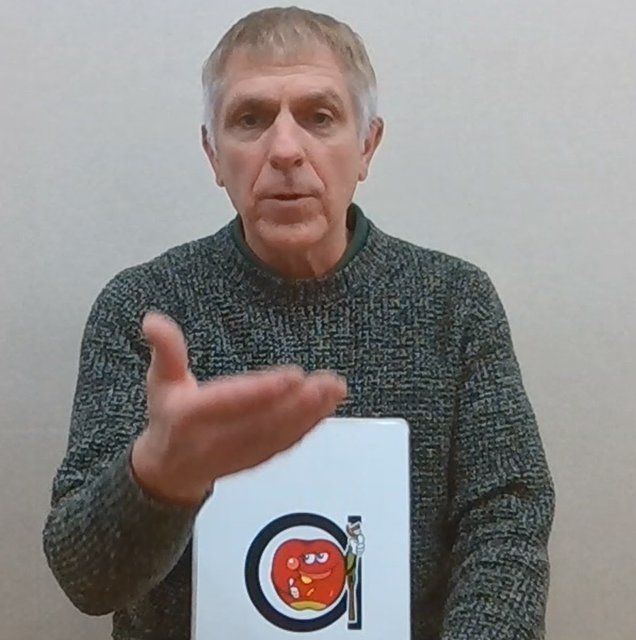

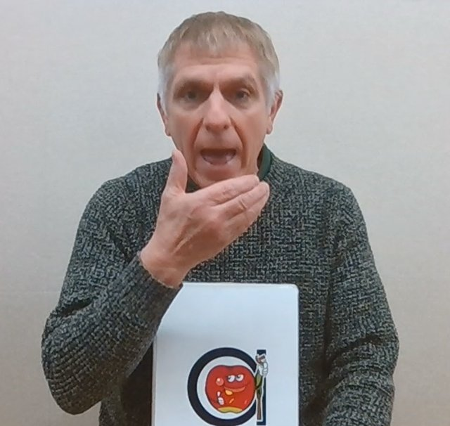

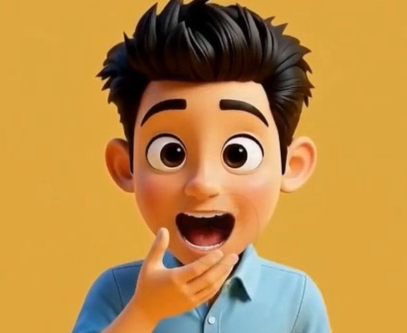

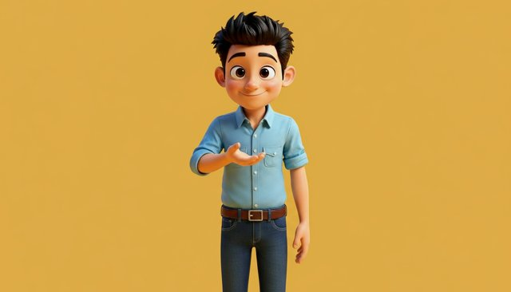

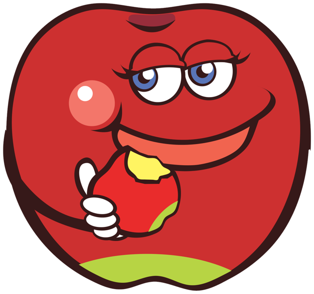
| 日時 | 北浦先生の指示（原文） | 直したこと |
|---|---|---|
| 07/10 15:42 | ①1 ②今回のAの口は大きすぎるので前の版との間ぐらいの口の大きさで ③2 ④1 | v4: ピクサー風でそろえる。口を v3 と前の版の中間に（蜂谷さん 17:51「手のひらが180°返っている」→手の向きも修正） |
| 07/10 20:39 | お願いします。 一つ確認なのですが、『 ③二階建ての a』というのは上の方という認識で合っていますか？ フォントを『century gothic』でお願いします。 | a は二階建て・Century Gothic |
| 09/10 15:51 📎 | /æ/ の口の形が前の版より小さくなっています。 添付画像の口の大きさにしてください。 | v5: 口を添付画像の大きさに（縦÷顔幅 約0.25） |
| 09/10 18:37 | 口の大きさはそれでいいのですが、閉じた状態から開く動きがなんか変です。 | v6〜v7: 口だけをゆっくり開く。コマを混ぜない（蜂谷さん 10/11「残像」） |
| 13/10 14:52 | v2で右側下の"a"のフォントを『Century Gothic』で作ってください。 この形が一番いい気がします。 | v2cg: v2 の映像のまま、右下の a だけ Century Gothic Bold |
| 13/10 15:02 | 名前「Annie Apple」の字も Century Gothic にしてください。 | v2cg2: 名前も Century Gothic Bold |
| 13/10 18:31 | 動画はこれで良いと思います。 声質が暗いのが気になるのですが、音声を変えて何パターンか作れますか？できればもっと元気な明るい子どもの声のような感じが良いです。 | 声 A〜D（明るい子どもの声）を作成 |
| 13/10 19:01 | 先ほどの声質よりは良いのですが、動画の男の子の顔と合わない気がします。 もう少し少年のような声（低め）で何パターンかお願いします。 | 声 E〜H（少年の低めの声）を作成 |
| 13/10 19:34 | 声Gがいいと思いました。 これを一旦基準として覚えておいてください。 引き続きBの作成をお願いします。 再度動画や静止画を送る方が良いですか？ | 声G（Liam +4半音）を基準に決定 → B へ |
生成の指示文（全文）
始めの絵（fal-ai/nano-banana/edit・{"image_urls": ["(参照画像1)"], "num_images": 2, "aspect_ratio": "16:9", "output_format": "png"}）
Zoom out and complete this picture. The boy is standing upright, seen straight from the front at eye level. Extend his body naturally below the bottom edge of the inner picture: show his whole shirt, his brown belt and dark-blue jeans down to his mid-thighs, and his left arm hanging relaxed at his side. Keep his face, hair, eyes, right hand pose (in front of his chest, palm up, cupped, empty) and his light-blue shirt exactly as they are. Make his gentle smile perfectly symmetric, both mouth corners at the same height. Nothing around his neck. Fill the whole background with the same smooth plain warm yellow, no visible border or seams, no text. Sharp 3D animated feature-film render.
音の時の絵（fal-ai/nano-banana/edit・{"image_urls": ["(参照画像1)", "(参照画像2)"], "num_images": 2, "aspect_ratio": "16:9", "output_format": "png"}）
Image 1 is the picture to keep: the same standing boy, same face, hair, eyes, light-blue shirt, belt and jeans, the same plain warm yellow background, the same frontal eye-level camera and exactly the same framing and position in the frame. Change only two things, following the boy in image 2: (1) his right hand is raised to his mouth: the hand is cupped just below his lower lip with the fingers curled under his chin and the thumb pointing up beside the corner of his mouth, the hand does NOT cover his lips; (2) his mouth is wide open as when saying the short vowel 'a' in 'apple': jaw dropped, lips spread evenly to both sides, perfectly symmetric with both mouth corners at exactly the same height, upper teeth visible, tongue resting low, a happy open expression. Eyes open, looking into the camera. Left arm unchanged. Do not copy image 2's high camera angle, its orange background or its red necklace: nothing around his neck. The hand is empty. No text.
動き H3（minimax/h3-max-turbo/image-to-video・{"image_url": "(アップロードした画像/音声のURL)", "end_image_url": "(アップロードした画像/音声のURL)", "duration": 5, "resolution": "768P", "prompt_expansion_mode": "disabled", "seed": 101}）
A standing 3D animated cartoon boy in front of a plain warm yellow background. He smoothly raises his right hand from in front of his chest up to just below his mouth, and as the hand arrives he opens his mouth wide as if saying the short vowel 'a' in 'apple', mouth open evenly on both sides. The camera is fixed straight in front of him at eye level: no camera movement, no zoom, no cut. He keeps standing still; only his right arm and his mouth move. No other people, no objects, no text.
声G（voice-changer）（fal-ai/elevenlabs/voice-changer・{"audio_url": "(アップロードした画像/音声のURL)", "voice": "Liam", "remove_background_noise": false, "seed": 7, "output_format": "pcm_44100"}）
B — Betty Broccoli /b/
いまの版: 最終版 v14（10/14）
作り方: ~/pros-kyozai/drafts/2026-10-14_b-v14/work/compose_b14.py 録音: 引継ぎ zip の audio/02/B_Betty_Broccoli.mp3 → 声G

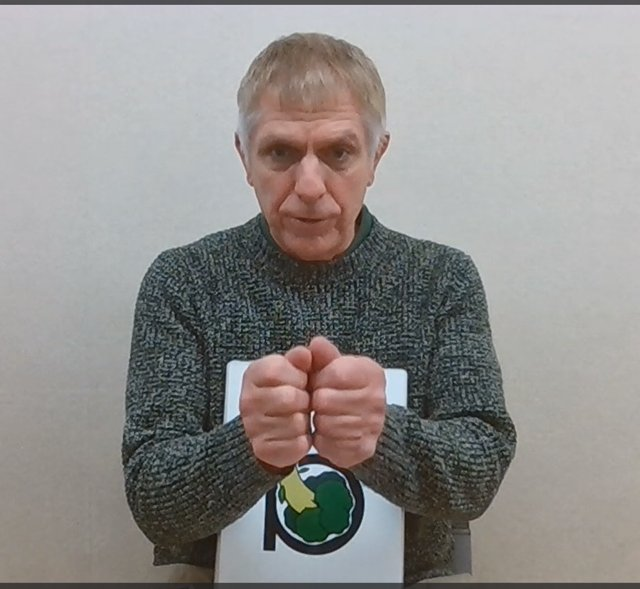

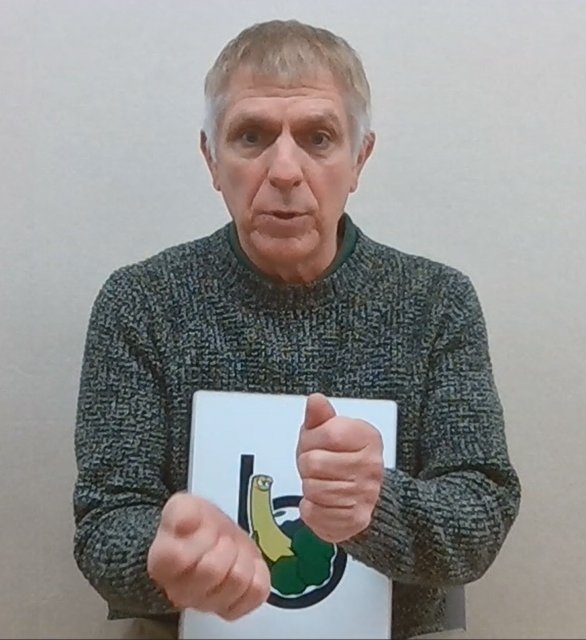

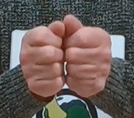

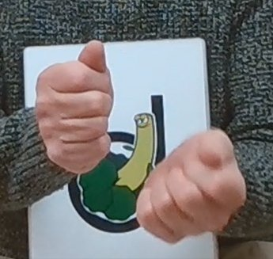

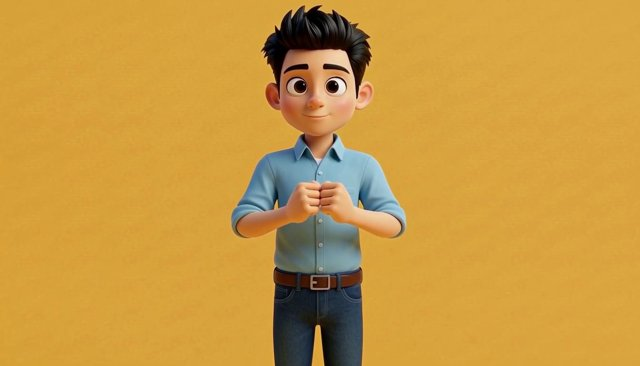

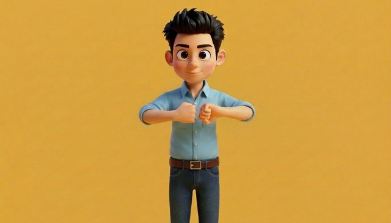

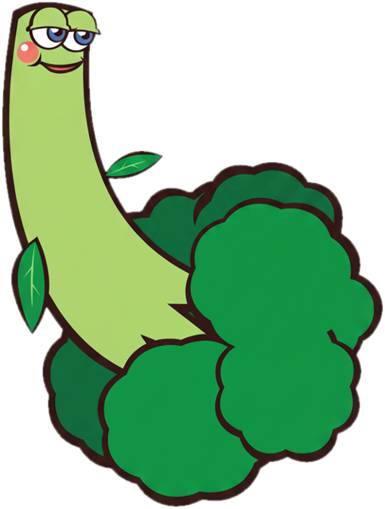
| 日時 | 北浦先生の指示（原文） | 直したこと |
|---|---|---|
| 06/10 10:51 | 親指について：親指を上でグーに握って両手をくっつけ、親指は両方とも立てない | 親指は立てずに握る |
| 13/10 19:51 | 動かすのは「子ども自身の左手（画面では右側の手）」で合っています。 | U2 確定: 動かすのは画面右の手 |
| 13/10 20:17 | ・Betty Broccoliのイラストが大きすぎます。Annie Appleと同じぐらいにしてください。 ・音声や文字はこれで問題ありません。 ・手の向きが違います。曲げている小指が下、親指が上になるように向きを変えてください。 ・口：閉じている状態からいきなりすぼめた形にするのではなく、aの時の様になめらかにつなげてください。 | v3: Betty 幅 150→100px、拳を縦に、口を段階的に |
| 13/10 20:54 📎 | ・口の形や動きは良くなりましたが、カクカクしているのでなめらかにしてください。 ・手の形ですが、まだ違うので添付の画像で手の向きを確認して作ってみてください。 | v4: 写真の向きで描き直し、コマを1枚ずつ使う |
| 13/10 21:49 📎 | ・口の動きは良くなりました。 ・手のサイズが大きくなりましたか？おかしいので戻してください。 ・手の形は、少年の右手の形で親指をもう少し倒してください。左手も右手と対象で同じ形にしてください。 ・手の動きがまだ違います。添付画像のように横に開く感じです。 | v5: 手の大きさを戻し、拳が外へ開く |
| 14/10 13:32 | ・口の動きをもう少しなめらかにしてください。 ・手の向きがまだ違います。体の前で手のひらを合わせ、それをそのままグーの形にする感じです。わかりますかね？ ・あと、左手を横に倒す時と"b"の発音がそろうようにしてください。 | v6: 手のひらを合わせたグーの絵、倒し終わりの次のコマで /b/ |
| 14/10 14:53 | ・まだ手の向きが違います。 ・今の向きでそのまま親指以外の４本の指と手のひらの付け根をくっつける感じです。（90°回転） | v7: 合掌の絵 → 握る H3 → そのコマを始めの絵に |
| 14/10 15:29 | ・手の向きがだいぶ良くなりました。もう少し手のひらの付け根を近づける（脇をしめる）感じでお願いします。 ・左手の動きが違います。下に開くのではなく、上に開く感じです。（握っている４本の指が上向きになる感じ） ・口の動きが少しぎこちないのでなめらかにしてください。 | v8: 拳を上へ返す H3。口元を常に貼る |
| 14/10 15:55 | ・手の動きは良くなりました。 ・口の動きは良くなりましたが、鼻が二重になるなど、もう少し改善が必要ですね。 | v9: 口の貼り範囲を鼻の下（y≥230）から |
| 14/10 16:05 | ・鼻と口元良くなりました。 ・ブロッコリーのイラストが手を隠しているので、"a"の時の様に左手が動くときに合わせて透明になるようにできますか？ | v10: 手が動くと Betty を 0.6→ほぼ0 |
| 14/10 16:13 | ・v9ではBettyで見えていなかったのですが、左手が動いたとき、曲げている指が残っている（残像）ので消してください。 ・Bettyの薄くなる速さは良いですが、完全には消えずうっすら残っているのが気になります。 | v11: 手の貼り範囲を広げ、Betty を完全に 0 |
| 14/10 16:27 | ・両拳のあいだと Betty の消え方は良くなりました。 ・右手の親指が異様に長いように見えるので自然な長さにしてください。 | v12: 親指を縦に縮める |
| 14/10 20:11 | ・まだ右手親指が変な感じがします。 ・左手を動かす時に右手の親指が見えないようにしてみて欲しいです。 | v13: 左手を動かす間、親指を消す |
| 14/10 20:13 | あと脇をしめる件について、変になりそうなのでやっぱり修正しなくていいです。 | 脇をしめる件は取り下げ |
| 14/10 20:35 | ・親指を見えなくしてもらい、良くなりました。 ・顎～頬のあたりが二重になっているように見えます。修正お願いいたします。 | v14: 口の貼り範囲を楕円にして顎線をまたがない |
| 14/10 20:48 | とても良くなりました。 とりあえずこのv14が最終版としておいてください。 次は"c"の作成をお願いします。 素材はありますか？ | B 最終版 = v14 |
生成の指示文（全文）
手のひらを合わせたグーの始めの絵（fal-ai/nano-banana-pro/edit・{"image_urls": ["(参照画像1)"], "num_images": 2, "aspect_ratio": "16:9", "output_format": "png", "resolution": "1K"}）
Edit image 1. Keep the boy, his face, eyes, eyebrows, closed smiling mouth, hair, clothes, the yellow background, the camera, the framing and the small size of his hands exactly the same. Change only the pose of his two hands: he first pressed his two palms flat together in front of his chest (like a clap or prayer, fingers pointing up), and then curled the fingers of both hands into fists while keeping the hands pressed together. So now the two fists face each other and press together at the centre of his chest: the curled fingers of each fist touch the curled fingers of the other fist, the back of each hand faces outward (left hand's back toward the right edge of the picture, right hand's back toward the left edge), both thumbs are on the top of the fists side by side, both little fingers are at the bottom, forearms come up from below. The two fists are mirror images (left-right symmetric), same size, same height. Exactly two hands, five fingers each. No text.
合掌→握る H3（f105 を始めの絵に）（minimax/h3-max-turbo/image-to-video・{"image_url": "(アップロードした画像/音声のURL)", "duration": 5, "resolution": "768P", "prompt_expansion_mode": "disabled", "seed": 707}）
A standing 3D animated cartoon boy in front of a plain warm yellow background, his palms pressed together in front of his chest like praying. Slowly and steadily he curls the four fingers of both hands down into fists while keeping the heels of his palms pressed together, so the two fists end up pressed against each other palm side to palm side, backs of the hands facing left and right, thumbs on top side by side, little fingers at the bottom. The hands lower slightly to chest height. His face stays still, mouth closed, he does not blink. Fixed camera, no zoom, no cut. No objects, no props, no text.
手を倒す H3（minimax/h3-max-turbo/image-to-video・{"image_url": "(アップロードした画像/音声のURL)", "end_image_url": "(アップロードした画像/音声のURL)", "duration": 5, "resolution": "768P", "prompt_expansion_mode": "disabled", "seed": 404}）
A standing 3D animated cartoon boy in front of a plain warm yellow background, two small fists pressed together in front of his chest. In one slow, steady, continuous motion his left fist (on the right side of the picture) tips over sideways to the right, rolling at the wrist like a door opening, while his other fist stays perfectly still. His mouth stays closed. Constant speed, no pauses. He does not blink, eyebrows stay still. Only the boy and the plain yellow background. Fixed camera, no zoom, no cut. No objects, no props, no text.
口だけ動く H3（minimax/h3-max-turbo/image-to-video・{"image_url": "(アップロードした画像/音声のURL)", "end_image_url": "(アップロードした画像/音声のURL)", "duration": 5, "resolution": "768P", "prompt_expansion_mode": "disabled", "seed": 505}）
A standing 3D animated cartoon boy in front of a plain warm yellow background holds his two fists perfectly still. Only his lips move: very slowly and smoothly, his closed lips gently push forward and round into a small round 'o' opening, at a constant gentle speed, then hold. The mouth never opens wide and no teeth show. He does not blink, eyebrows stay still. Hands, arms, head and body do not move. Fixed camera, no zoom, no cut. No objects, no text.
拳を上へ返す H3（minimax/h3-max-turbo/image-to-video・{"image_url": "(アップロードした画像/音声のURL)", "end_image_url": "(アップロードした画像/音声のURL)", "duration": 5, "resolution": "768P", "prompt_expansion_mode": "disabled", "seed": 838}）
A standing 3D animated cartoon boy in front of a plain warm yellow background, two small fists pressed together in front of his chest. In one slow, steady, continuous motion only his left fist (on the right side of the picture) turns over at the wrist and opens upward like a book cover, so that its curled four fingers end up facing up. It stays a closed fist right next to the other fist. His other fist, elbows and forearms stay still. His mouth stays closed, he does not blink. Fixed camera, no zoom, no cut. No objects, no text.
C — Cary Cucumber /k/
いまの版: 最終版 v9（10/15）。一式 lab/final-abc/C/
作り方: ~/pros-kyozai/drafts/2026-10-15_c-v9/work/compose_c9.py 録音: 引継ぎ zip の audio/03/C_Cary_Cucumber.mp3 → 声G

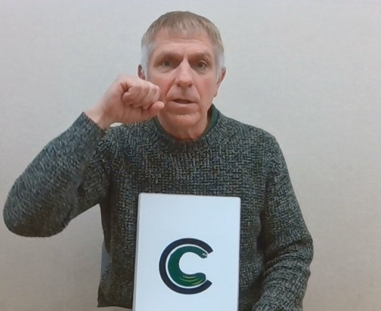

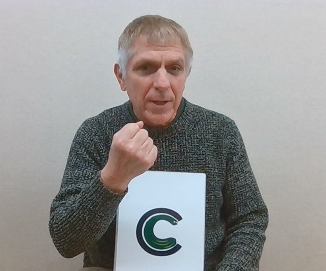

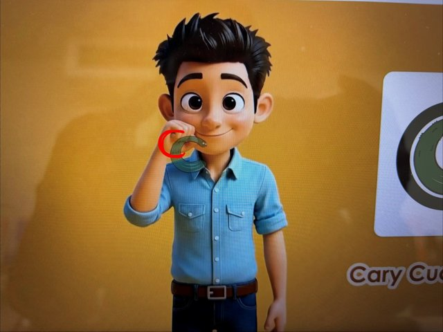

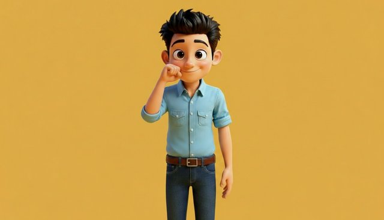

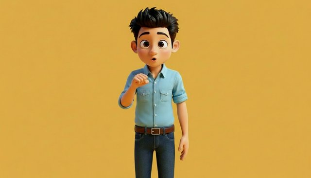

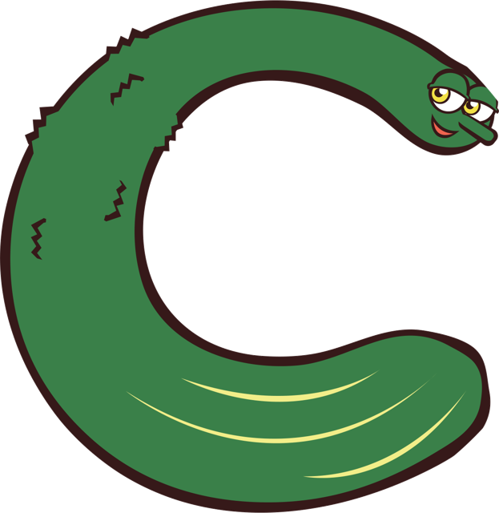
| 日時 | 北浦先生の指示（原文） | 直したこと |
|---|---|---|
| 15/10 15:23 | ・/k/ は腕を動かすタイミングで発音するようにしてください。 ・右手のグーを下ろす際、胸の中央ではなく、右胸前あたりに下ろすようにしてください。 | v2: 下ろす途中で /k/、終わりの絵を右胸前に |
| 15/10 18:05 | ・グーを下ろす先の位置はこれで良いです。 ・グーを下ろす動きをもっと速くできますか？イメージは右手にきゅうりを持っていて、それをかじって腕を下ろす感じです。 | v3: 1.0秒→0.5秒 |
| 15/10 18:15 | ・腕を下ろす速さ、良いです。 ・はじめ、口元にあるグーの手がぼやけています。修正お願いします。 | v4: 止まっている間は元の絵のグー |
| 15/10 18:26 | ・Caryに問題は無かったので戻して下さい。 ・恐らく口周りの部分が、グーの前に来ているためにグーが欠けてしまっているのかと思います。グーが上に来るように確認してください。 | v5: Cary を戻し、グーを口の上に重ねる |
| 15/10 18:38 | 良くなりましたが、口の右側部分が変です。 /k/ の時に動いていないようです。 | v6: 口は全面に貼り、グーだけ上に |
| 15/10 18:40 | もし口と手が重なって作りにくいようであれば、手をもう少し横（少年の右方向）にずらしても大丈夫です。 | （手を横にずらしても可） |
| 15/10 19:03 | 良くなりました。 すみません。Caryの位置を少しだけ下にずらしてもらいたいです。（右手の小指の曲がっているあたり） | v7: Cary を下へ |
| 15/10 19:15 | もう少し右下にずらしてもらいたいです。（Caryが口にかからないように） | v8: Cary を右下へ |
| 15/10 19:27 📎 | 添付画像の赤で描いた位置にできますか？ | v9: 赤印を動画の座標に換算（cx840 cy376） |
| 15/10 19:40 | とても良いです。一旦これを最終版として保存しておいてください。 | C 最終版 = v9 |
生成の指示文（全文）
始めの絵（fal-ai/nano-banana/edit・{"image_urls": ["(参照画像1)", "(参照画像2)"], "num_images": 2, "aspect_ratio": "16:9", "output_format": "png"}）
Image 1 is the picture to keep: the same standing boy, same face, hair, eyes, light-blue shirt, belt and jeans, the same plain warm yellow background, the same frontal eye-level camera and exactly the same framing, size and position in the frame. Change only his arms, hands and mouth, following the hand pose of the person in image 2: his RIGHT hand (on the LEFT side of the picture) is closed into a tight fist and raised beside his face, right next to his right cheek and jaw, at the height of his mouth, the curled fingers facing toward his mouth, the fist almost touching the side of his face but not covering the mouth. The right elbow is bent and points down and slightly out. His LEFT arm (on the right side of the picture) hangs relaxed at his side. The hands are empty. Mouth closed, lips gently together, relaxed, perfectly symmetric. Eyes looking into the camera. Do not copy image 2's person, clothes, camera angle, background or card. Nothing around his neck. No text, no watermark.
終わりの絵（右胸前）（fal-ai/nano-banana/edit・{"image_urls": ["(参照画像1)", "(参照画像2)"], "num_images": 2, "aspect_ratio": "16:9", "output_format": "png"}）
Image 1 is the picture to keep: the same standing boy, same face, hair, eyes, light-blue shirt, belt and jeans, the same plain warm yellow background, the same frontal eye-level camera and exactly the same framing, size and position in the frame. Change only his right arm, right hand and mouth, following the hand pose of the person in image 2: his RIGHT hand (on the LEFT side of the picture) is still a tight closed fist, but it has moved straight down from beside his face to the front of his RIGHT chest (the chest side on the LEFT of the picture, directly below where the fist started), in front of his right pectoral, NOT at the center of the chest, and the wrist is turned so the fist stands VERTICALLY: the thumb side on top, the little finger at the bottom, the curled fingers facing the camera. The right elbow is bent and close to his body. His LEFT arm (on the right side of the picture) still hangs relaxed at his side, unchanged. The hands are empty. His mouth is open a little, lips slightly apart in a relaxed small open shape as if saying 'k', perfectly symmetric. Eyes looking into the camera. Do not copy image 2's person, clothes, camera angle, background or card. Nothing around his neck. No text, no watermark.
口の H3（minimax/h3-max-turbo/image-to-video・{"image_url": "(アップロードした画像/音声のURL)", "end_image_url": "(アップロードした画像/音声のURL)", "duration": 5, "resolution": "768P", "prompt_expansion_mode": "disabled", "seed": 202}）
A standing 3D animated cartoon boy in front of a plain warm yellow background. He starts with his right fist (on the left side of the picture) held beside his cheek at mouth height. Slowly and smoothly, taking a full second, he moves that fist down to the center of his chest while turning the wrist so the fist stands upright, thumb on top. The fist stays tightly closed the whole time, never opening. Only at the very end his closed lips part slightly into a small relaxed opening, no teeth showing. His head and shoulders stay perfectly still; his eyes stay open and look at the camera, no blinking. His other arm stays relaxed at his side. The camera is fixed straight in front of him at eye level: no camera movement, no zoom, no cut. No other people, no objects, no text.
手を下ろす H3（minimax/h3-max-turbo/image-to-video・{"image_url": "(アップロードした画像/音声のURL)", "end_image_url": "(アップロードした画像/音声のURL)", "duration": 5, "resolution": "768P", "prompt_expansion_mode": "disabled", "seed": 202}）
A standing 3D animated cartoon boy in front of a plain warm yellow background. He starts with his right fist (on the left side of the picture) held beside his cheek at mouth height. Slowly and smoothly, taking a full second, he moves that fist straight down to the front of his right chest (same side, not toward the center), the fist stays closed. The fist stays tightly closed the whole time, never opening. Only at the very end his closed lips part slightly into a small relaxed opening, no teeth showing. His head and shoulders stay perfectly still; his eyes stay open and look at the camera, no blinking. His other arm stays relaxed at his side. The camera is fixed straight in front of him at eye level: no camera movement, no zoom, no cut. No other people, no objects, no text.
D — Duncan Donut /d/
いまの版: v9 を確認待ち（10/16）
作り方: ~/pros-kyozai/drafts/2026-10-15_d-v9/work/compose_d9.py 録音: 引継ぎ zip の audio/04/D_Duncan_Donut.mp3 → 声G

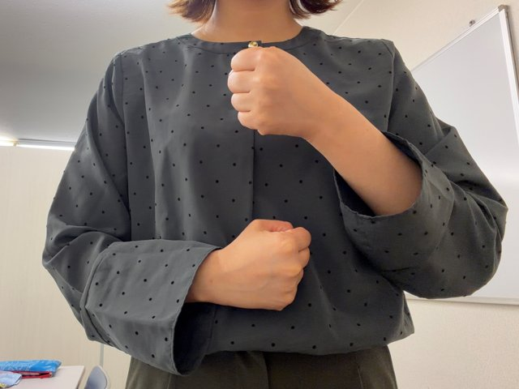

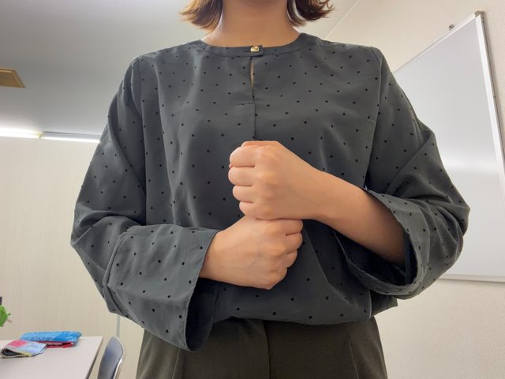

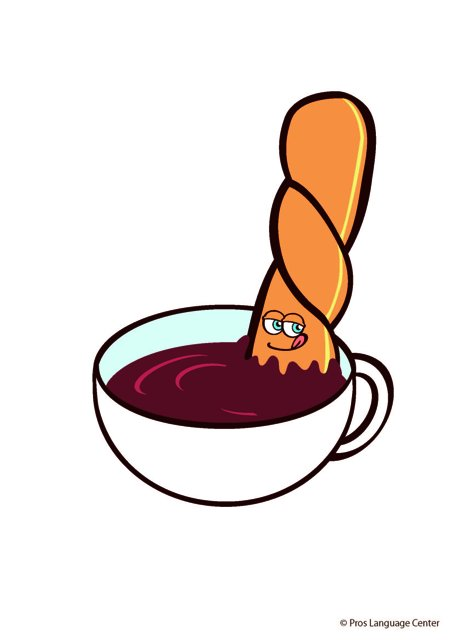

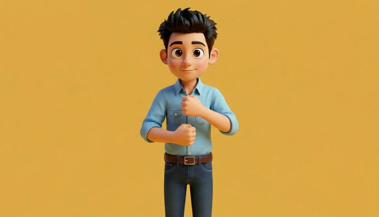

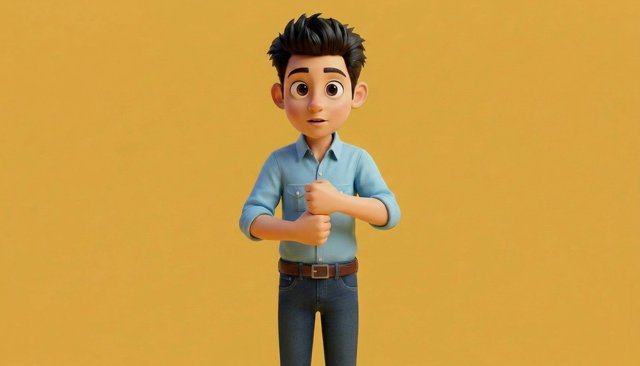

| 日時 | 北浦先生の指示（原文） | 直したこと |
|---|---|---|
| 15/10 19:47 📎 | 手の動きの初め(d_1)と/d/の時(d_2)の静止画を送りますので参考に作成してください。 | v1: d_1→d_2、拳が重なるコマで /d/ |
| 15/10 19:48 | a,bの時の様に出来たら新しいスレッドで知らせてください。 | 修正版は新しいスレッドで知らせる |
| 15/10 20:20 | ・鼻が二重になっているので修正してください。 ・口が動いていません。もし素材が無ければお渡しするのでお知らせください。 | v2: 位置合わせ ±24px、休みは閉じた口 |
| 15/10 20:22 | 毎回動画の修正が出来たら新しいスレッドに載せてください。 | （共通ルールに追加） |
| 15/10 20:36 | ・口の形ですが、もう少しすぼめてみてください。 ・手の動きは良いのですが、左手を下す時に、服が伸びてるように見えます。 ・Duncanは右手に重ねて、abcと同じく、初めは半透明、動きに合わせて透明にしてください。 | v3: 口の中央を横 0.7 倍、体の H3 を作り直し、Duncan を下の拳に |
| 15/10 21:07 📎 | ・口と服は一旦これで良いです。 ・Duncanのカップの部分が無いので修正してください。画像添付します。 | v4: 先生の原画（カップ付き）を切り抜いて使用 |
| 15/10 21:16 | ・Duncanが消える際、abcの様になめらかにしてください。今はいきなり消える感じになっています。 ・口の動きも出来ればもう少しなめらかにしてください。 | v5: Duncan は手の動きに合わせ約0.7秒で消す |
| 15/10 21:27 | ・Duncan の消え方はこれで良いです。 ・初めの口の形が変わってしまっているのでひとつ前に戻してください。後はこれで良いです。 | v6: 休みの口を v4 に戻す |
| 15/10 21:36 | ２段階目の口は必要なのですか？できれば１つ目と３つ目の形をスムーズにつないでほしいです。 | v7: 中間の口をやめ、直接つなぐ |
| 15/10 21:44 | 口の形の変わり目がまだなめらかではないですね。 | v8: 補間コマで等間隔に開く |
| 15/10 21:58 | ・まだ残像がありますね。 ・服が伸びる問題ももう少し改善できないでしょうか。 | v9: 補間をやめ元コマだけ（残像対策）。手と体の H3 を作り直し（服の伸び対策） |
生成の指示文（全文）
始めの絵（fal-ai/nano-banana-pro/edit・{"image_urls": ["(参照画像1)", "(参照画像2)"], "num_images": 2, "aspect_ratio": "16:9", "resolution": "1K", "output_format": "png"}）
Image 1 is the picture to keep: the same standing boy, same face, hair, eyes, light-blue shirt, belt and jeans, same plain warm yellow background, same frontal eye-level camera, exactly the same framing, size and position. Change only his arms and hands. Image 2 is a teacher's photo showing the hand pose; copy the pose exactly as it appears in the picture, not mirrored. Do not copy the teacher, clothes, background or camera. All directions below are as seen in the picture. Both hands are tight closed fists in front of the center of his chest, backs of the hands toward the camera, elbows down near the body. LOWER fist: the arm coming from the LEFT edge of the picture; this fist lies horizontally in front of his lower chest, forearm level, knuckles pointing to the picture's right. UPPER fist: the arm coming from the RIGHT edge of the picture; this fist stands upright in front of his upper chest just below the collar, on the center line, about one fist-height ABOVE the lower fist with a clear gap between them. Mouth closed, relaxed neutral smile. No text, no watermark.
終わりの絵（fal-ai/nano-banana-pro/edit・{"image_urls": ["(参照画像1)", "(参照画像2)"], "num_images": 2, "aspect_ratio": "16:9", "resolution": "1K", "output_format": "png"}）
Image 1 is the picture to keep: the same boy, same pose, same framing, background, clothes and lower fist. Change only: the UPPER fist (whose arm comes from the RIGHT edge of the picture) moves straight DOWN until it sits directly on top of the LOWER fist (whose arm comes from the LEFT edge of the picture) and touches it, like the two hands gripping a baseball bat, as in image 2. The lower fist stays exactly where it is. Do not swap the arms: the arm from the picture's right stays on top. Both are tight closed fists, backs of hands toward the camera. His lips part slightly, small and symmetric, no teeth. No text, no watermark.
顔と口の H3（minimax/h3-max-turbo/image-to-video・{"image_url": "(アップロードした画像/音声のURL)", "end_image_url": "(アップロードした画像/音声のURL)", "duration": 5, "resolution": "768P", "prompt_expansion_mode": "disabled", "seed": 202}）
A standing 3D animated cartoon boy in front of a plain warm yellow background. He holds two closed fists in front of his chest: one fist lies horizontally low, the other is held upright about one fist-height above it. Smoothly, he moves the upper fist straight down until it rests on top of the lower fist, like gripping a baseball bat. The lower fist stays still. Both fists stay tightly closed the whole time, never opening. Only at the very end his lips part slightly into a small relaxed opening, no teeth showing. His head and shoulders stay perfectly still; his eyes stay open and look at the camera, no blinking. The camera is fixed straight in front of him at eye level: no camera movement, no zoom, no cut. No other people, no objects, no text.
手と体の H3（v9）（minimax/h3-max-turbo/image-to-video・{"image_url": "(アップロードした画像/音声のURL)", "end_image_url": "(アップロードした画像/音声のURL)", "duration": 5, "resolution": "768P", "prompt_expansion_mode": "disabled", "seed": 404}）
A standing 3D animated cartoon boy in front of a plain warm yellow background. He holds two closed fists in front of his chest: one fist lies horizontally low, the other is held upright about one fist-height above it. Slowly and smoothly, only his forearm lowers: the upper fist moves straight down until it rests on top of the lower fist, like gripping a baseball bat. The upper arm and elbow stay tucked at his side and do not move; only the forearm hinges at the elbow. The shirt is loose cotton that does not stretch at all: no fabric pulling, no stretching folds at the armpit, chest or pocket, the rolled sleeves keep their exact shape. The lower fist stays still. Both fists stay tightly closed, never opening. His head, face and shoulders stay perfectly still; eyes open looking at the camera, no blinking, mouth closed. The camera is fixed straight in front at eye level: no camera movement, no zoom, no cut. No other people, no objects, no text.
Duncan 単体（v3。v4 以降は先生の原画）（fal-ai/nano-banana/edit・{"image_urls": ["(参照画像1)"], "num_images": 2, "aspect_ratio": "3:4", "output_format": "png"}）
Image 1 is a phonics card. Draw ONLY the character Duncan Donut from this card (the twisted fried-dough donut character with a face), complete and whole, exactly the same character design, colours, black outlines and flat illustration style, but with NOTHING overlapping him: remove the black letter 'd', the chocolate bowl, and any card frame or text, and complete the parts that the letter 'd' and the bowl were covering so his whole body is fully drawn with continuous outlines. Centre him on a pure plain white background with generous empty margin on every side. No text, no shadow.